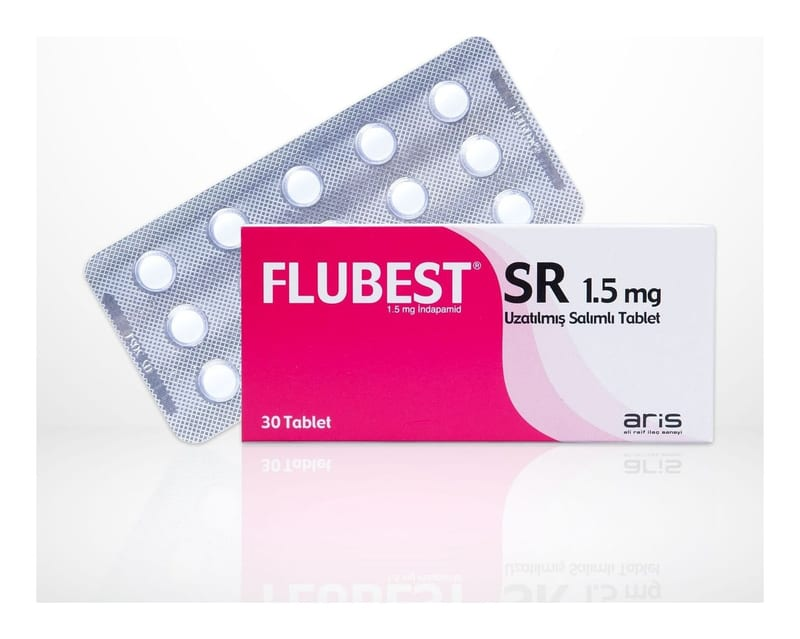

Flubest SR 1,5 mg Uzatılmış Salımlı Tablet, 30 Adet

Ne için kullanılır
KT · Bölüm 1• FLUBEST SR, fil m kaplı tablet, yuvarlak, beyaz-beyaza yakın, sürekli salım sağlayan 30 tabletlik blister ambalajda bulunmaktadır. • FLUBEST SR yetişkinlerde esansiyel hipertansiyon tedavisi için doktorunuz tarafından reçetelenmiştir. • Yüksek kan basıncını (hipertansiyon) düşürmeye yarayan bir ilaçtır ve “indapamid” etkin maddesini içerir. “İndapamid” diüretiktir. Pek çok diüretik böbreklerde oluşan idrar miktarını arttırır. Ancak indapamid biraz farklıdır. Çünkü böbreklerde oluşan idrar miktarını çok az arttırmaktadır.